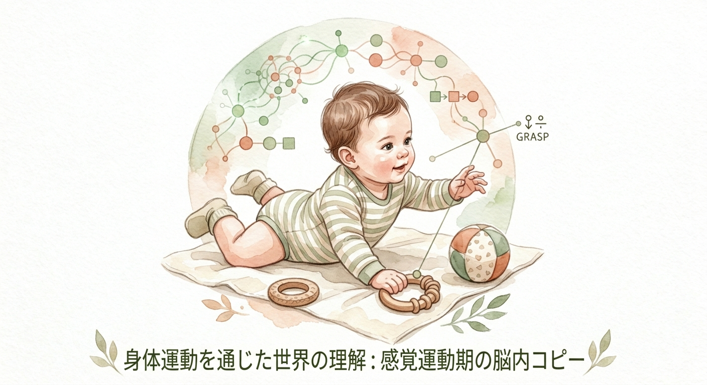
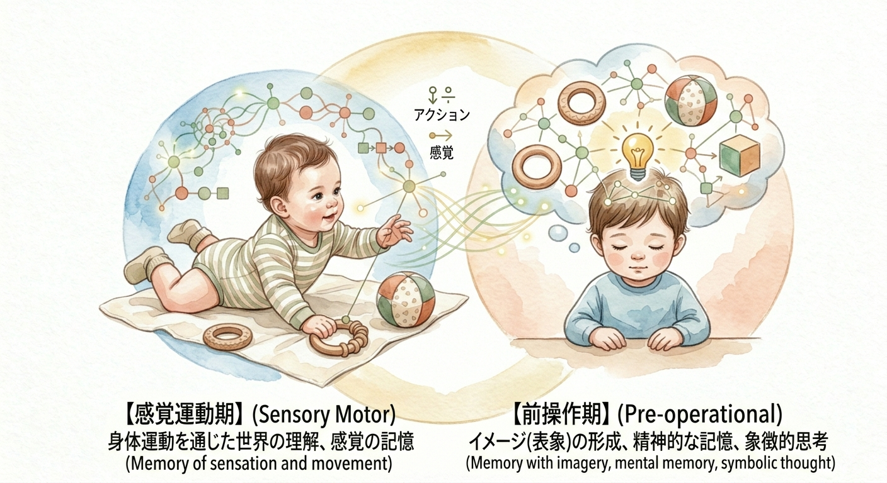

能動的様相：世界を構造化する身体と脳
皆さんは「赤ちゃんは受動的に親からの刺激を受けて育つ」と考えていないでしょうか。近年の発達心理学では、乳児は生まれながらにして「能動的様相（Active Aspect）」を持つ存在であることが示されています。彼らは決して情報をただ受け取るだけの器ではなく、自らの五感を駆使し、周囲の世界を探索し、その構造をコピーし、理解しようとする「小さな科学者」なのです。
例えば、乳児が手足をバタバタさせるのは無意味な運動ではありません。それは「身体という道具」を使って、空間の広がりや対象物との距離を測り、自分の意志が世界にどのように作用するかという「間マッピング」を行っているプロセスなのです。

「なぜ、運動が認知発達とこれほど深く結びついているのか」。その答えは脳の構造にあります。運動を司る運動野、計画を立てる前頭前野、そして予測誤差を計算し修正する小脳は、連携して働いています。
遠心性コピー（Efferent Copy）：運動野が筋肉に指令を出す際、その内容を小脳にも送る複製データです。これにより、脳は「自分が意図して動かしたのか、偶然動いたのか」を区別できます。
固有受容感覚：自分の体が今、どこにあるのかという筋肉や関節からの感覚情報です。
予測誤差：運動の指令（遠心性コピー）と実際の体の状態（固有受容感覚）がずれた際、小脳がこれを検知し、瞬時に回路を修正することで、私たちは自分の動きを正確にコントロールします。
目をつぶっていても自分の鼻を正確に触れるのは、この精巧な修正システムが常に稼働しているからです。乳児は、ハイハイや歩行という身体運動を通じて、この「予測と修正」のサイクルを高速で繰り返し、知能という名の心の枠組みを物理的に構築しているのです。
体育の時間、新しいスポーツを学ぶときに体がうまく動かない、あるいは数学の計算練習で最初はつまずく。これらの経験は、まさに今回の「予測誤差」との格闘です。最初は脳内でのイメージ（遠心性コピー）と、実際の身体の動きや計算結果が一致しません。しかし、何度も繰り返すうちに小脳や大脳皮質がフィードバックを重ね、誤差を修正していきます。皆さんがこれまで経験してきた「苦しい練習」は、脳の回路を再構築し、自身の知能を物理的に書き換えるプロセスそのものだったのです。
乳児がどのように世界の構造を理解しているかを調べる有名な実験に「A not B error」があります。おもちゃを隠す場所を「A」から「B」に変えても、乳児は以前隠していた「A」の場所を探し続けてしまいます。これは、彼らが「イメージ」ではなく、「特定の運動」として記憶を保持しているからだと考えられます。

教育（Educate）の語源は「引き出すこと」です。能動的に世界を探索し、失敗し、大人からフィードバックを得る。EPPEプロジェクト（就学前教育の長期的影響に関する研究）が示すように、この能動的な対話の質が高い環境で育った子どもは、将来の社会性や論理的思考力に有意な差が出ます。知能とは、頭の中だけで育つものではなく、体というツールを通して、世界と対話する中で形作られるものなのです。